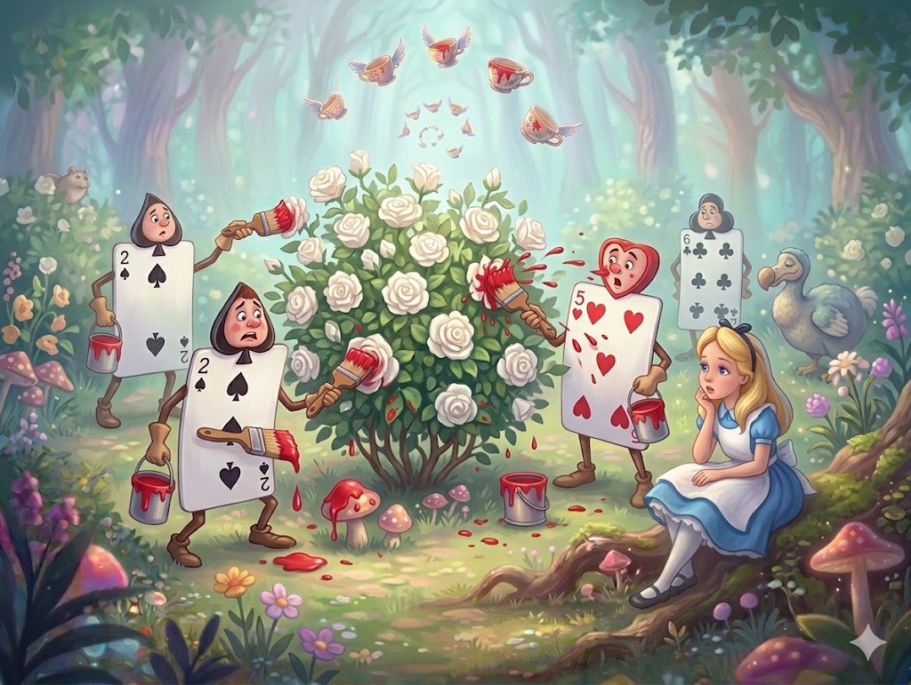
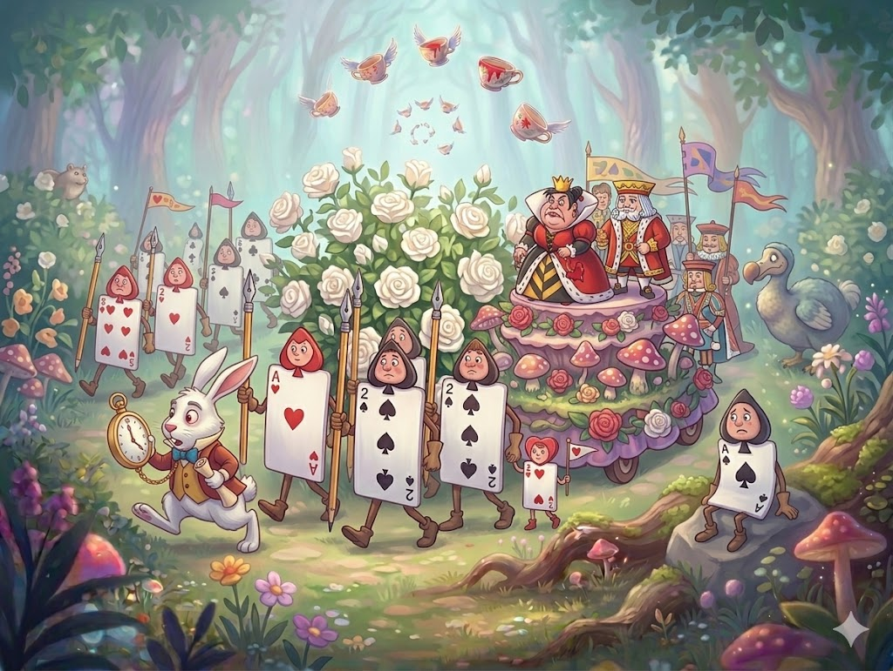
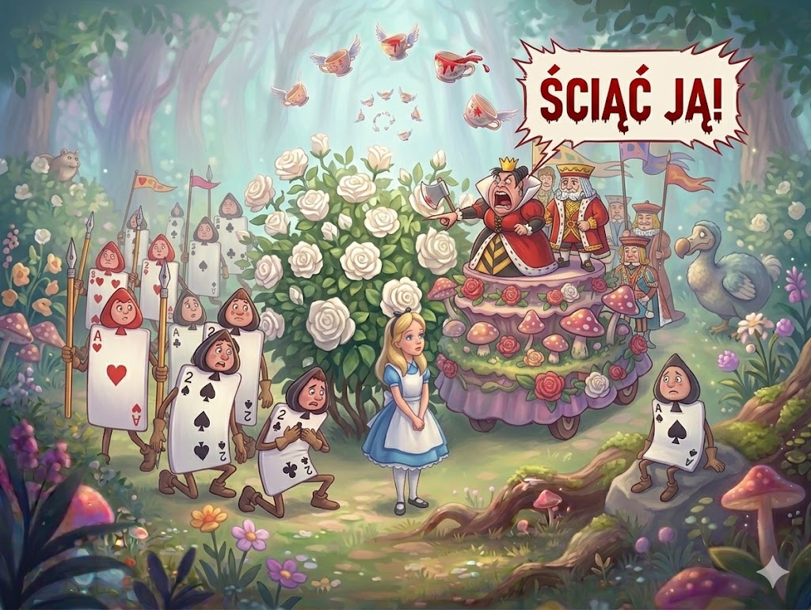
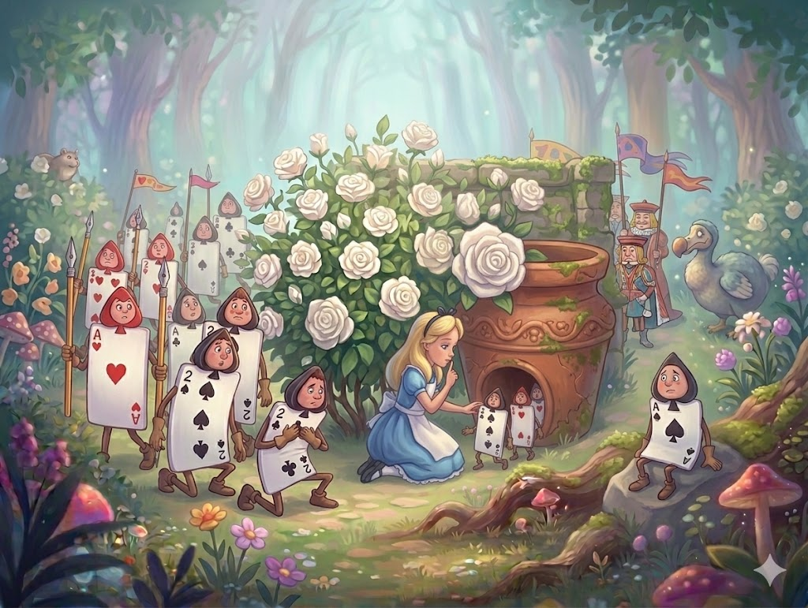
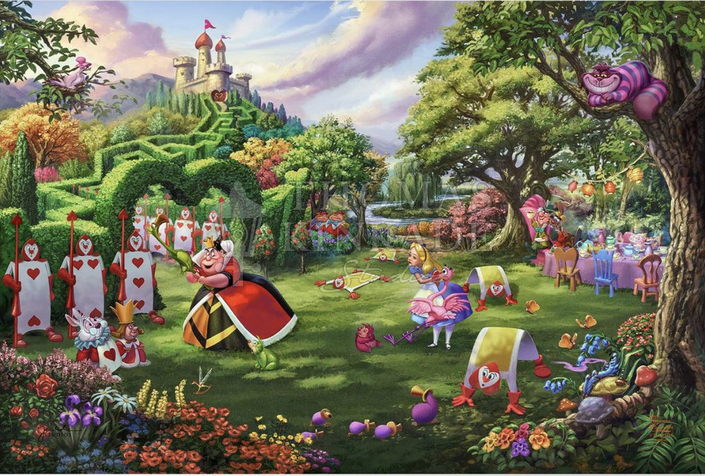
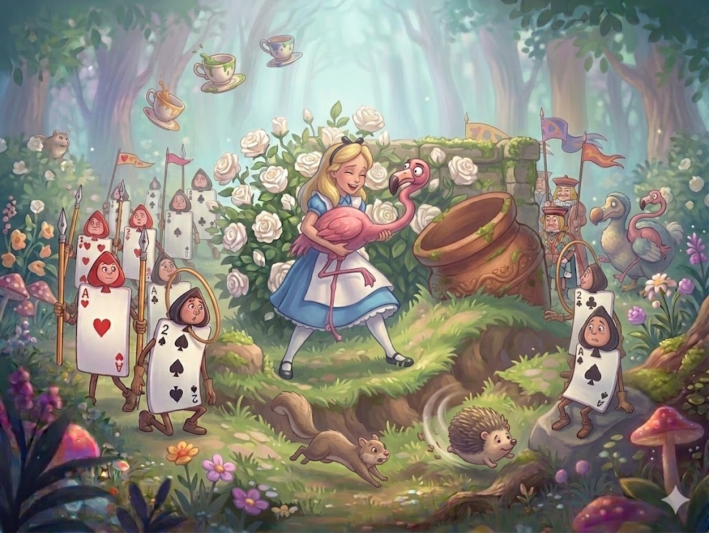

🎧 Слушай главу
W pobliżu wejścia do ogrodu rósł spory krzew białej róży. Trzech ogrodników przemalowywało pośpiesznie jego kwiaty na kolor czerwony. Zdziwiło to bardzo Alicję, podeszła więc bliżej i usłyszała słowa jednego z ogrodników:

- Uważaj tylko, Piątko! Jak możesz pryskać mi tak na ubranie!
- Nic na to nie poradzę - odparł Piątka wyraźnie urażony. - Siódemka trącił mnie w łokieć.
Na to Siódemka:
- Dobrze, dobrze, Piątko! Zrzucaj zawsze winę na drugich!
- Nie odzywałbyś się lepiej - przerwał Piątka. - Nie dalej jak wczoraj Królowa powiedziała, że zasługujesz na ścięcie.
- Za co? - zapytał pierwszy ogrodnik.
- To nie twoja sprawa, Dwójko - odpowiedział Siódemka.
- Nieprawda, to jest jego sprawa - wtrąciła się Piątka. - I powiem mu nawet za co: za to, że przyniósł Kucharce zamiast cebuli sadzonki tulipanów.
Siódemka rzucił pędzel na ziemię i właśnie zaczął:
- Jak Boga kocham, ze wszystkich niesprawiedliwości... - kiedy nagle urwał wpół zdania, wzrok jego bowiem padł na Alicję. Po chwili wszyscy trzej ogrodnicy zaczęli bić przed nią głębokie pokłony.
- Czy moglibyście mi wytłumaczyć, po co przemalowujecie te róże? - zapytała Alicja zmieszana ich czołobitnością.
Piątka i Siódemka spojrzeli milcząco na Dwójkę. Ten zaś powiedział cichutko:
- Idzie o to, proszę panienki, że to miały być czerwone róże, a my przez pomyłkę zasadziliśmy białe. Gdyby Królowa dowiedziała się o tym, zaraz kazałaby nas ściąć. Widzi panienka, robimy, co możemy, zanim ona nadejdzie i... - W tej chwili Piątka, który wpatrywał się przez cały czas w przeciwległy kraniec ogrodu, wrzasnął:
- Królowa, Królowa! - po czym wszyscy trzej upadli twarzą na ziemię. Następnie rozległy się odgłosy wielu kroków. Alicja wytężyła wzrok, pragnąc jak najszybciej ujrzeć monarchinię.

Najpierw szedł oddział żołnierzy. Byli oni zupełnie podobni do trzech ogrodników, podłużni i płascy, z tą tylko różnicą, że mieli zamiast pików wymalowane na tułowiach trefle. Za nimi postępowali bogato przyozdobieni diamentami dworzanie, po nich dziesięcioro dzieci królewskich, wesołych i rozigranych (cała rodzina królewska naznaczona była kierami). Potem szli goście, przeważnie Królowie i Królowe. Alicja dostrzegła pomiędzy Białego Królika okropnie podnieconego i zgadzającego się z góry ze wszystkim, co mówili jego rozmówcy. Przeszedł on obok Alicji i nawet jej nie zauważył. Następnie szedł Walet Kier niosąc na purpurowej poduszce z aksamitu koronę królewską.
No koniec kroczyli majestatycznie KRÓL I KRÓLOWA KIER.
Alicja nie bardzo wiedziała, czy powinna rzucić się na ziemię, tak jak to uczynili ogrodnicy. Przyszło jej jednak na myśl, że mały byłby pożytek z takich uroczystych pochodów, gdyby wszyscy musieli na ich widok padać na twarz, bo któż by wówczas mógł im się przyglądać? Stała więc spokojnie i czekała, co dalej nastąpi.
Kiedy orszak znalazł się tuż obok Alicji, Królowa spojrzała na nią surowo i zapytała Waleta Kier:
- Kto to jest?
Walet ukłonił się tylko i uśmiechnął zamiast odpowiedzi.
- Głupiec - rzekła z wściekłością Królowa. A potem zwróciła się do Alicji: - Powiedz, jak się nazywasz, moje dziecko.
- Nazywał się Alicja, proszę Waszej Królewskiej Mości - odpowiedziała Alicja bardzo uprzejmie, choć pomyślała sobie równocześnie: "Właściwie to tylko talia kart i nie ma powodu za bardzo się nimi przejmować".
- A kto to są ci tutaj? - zapytała Królowa, wskazując na trzech ogrodników leżących plackiem wokół krzaka róży. (Trzeba Wam bowiem wiedzieć, że leżeli oni na brzuchach, a z tyłu pokryci byli tym samym wzorem, co całą talia kart. Królowa nie mogła więc odróżnić, czy są to ogrodnicy, żołnierze, dworzanie, czy zgoła jej własne dzieci).
- A skąd ja mogę wiedzieć? To nie moja sprawa - powiedziała Alicja, zdumiona własną śmiałością.
Królowa zrobiła się purpurowa z wściekłości, przez chwilę wpatrywała się w Alicję wzrokiem dzikiej bestii, po czym zawołała:
- Ściąć ją, ściąć ją natychmiast!

- Bzdura! - rzekła Alicja bardzo stanowczo i Królowa zamilkła.
Król zaś wziął swą małżonkę za rękę i rzekł nieśmiało:
- Zastanów się, kochanie, przecież to tylko dziecko.
Królowa odwróciła się gwałtownie i zawołała na Waleta wskazując na ogrodników:
- Odwrócić się natychmiast!
Walet wykonał to nogą, jak gdyby nie chcąc się pobrudzić.
- Wstawajcie! - wrzasnęła Królowa, a ogrodnicy zerwali się z ziemi i zaczęli bić pokłony Królowi, Królowej, dzieciom królewskim i całemu orszakowi.
- Przestańcie w tej chwili - zaryczała Królowa. - Można oszaleć od tych ciągłych pokłonów! - Następnie, wskazując na róże, zapytała: - Coście tu robili?
- Dopraszam się łaski Waszej Królewskiej mości - rzekł pokornie Dwójka padając na kolana - próbowaliśmy...
- Już widzę! - wrzasnęła Królowa, która z wielką uwagą przypatrywała się krzewowi. - Ściąć ich!
Orszak ruszył tymczasem i tylko trzech żołnierzy pozostało na miejscu, aby dokonać zarządzonej przez monarchię egzekucji.
Nieszczęśliwi ogrodnicy zwrócili się do Alicji z błaganiem o wstawiennictwo i pomoc.
- Nie będziecie ścięci - rzekła stanowczo Alicja i wsadziła wszystkich trzech do wielkiej donicy, która stała w pobliżu krzewu. Żołnierze szukali ich przez chwilę, po czym spokojnie udali się w ślad za orszakiem.

- Czy zostali ścięci?! - krzyknęła z daleka Królowa.
- Jako żywo, Wasza Królewska Mość! - zawołali w odpowiedz dzielni wojacy.
- To dobrze - ucieszyła się Królowa. - Czy umiesz grać w krokieta?
Żołnierze spojrzeli na Alicję, do której najwidoczniej odnosiło się to ostatnie pytanie.
- Tak! - zawołała Alicja.
- Więc chodź tutaj! - wrzasnęła Królowa.
Alicja przyłączyła się do orszaku, niezmiernie zaciekawiona takim obrotem rzeczy.
- Mamy dziś śliczną pogodę - odezwał się nagle jakiś nieśmiały głosik tuż u jej boku. Był to Biały Królik, który przypatrywał się Alicji z wyraźnym zaniepokojeniem.
- Istotnie, śliczna - odpowiedziała uprzejmie Alicja. - A gdzie jest Księżna?
- Cicho, na miłość boską, cicho - wymamrotał Królik rozglądając się dokoła z przerażeniem. Następnie wspiął się na palce i szepnął Alicji do ucha: - Ona jest skazana na śmierć.
- Ale za co, za co? - zapytała Alicja.
- Czy powiedziałaś: "Co za szkoda?"
- Nie, wcale nie uważam, aby to była szkoda. Pytam tylko za co.
- Za to, że dała Królowej po nosie - rzekł Królik.
Alicja wybuchnęła śmiechem.
- Cicho - szepnął Królik drżącym z trwogi głosikiem. - Królowa może cię słyszeć! Było to, widzisz, tak: Księżna spóźniła się trochę i wtedy Królowa...
- Wszyscy na swoje miejsca! - krzyknęła Królowa przeraźliwie donośnym głosem. Goście rozbiegli się w różnych kierunkach, przy czym wpadali na siebie i przewracali się raz po raz. Po jakiejś minucie wszyscy byli gdzie trzeba i gra mogła się rozpocząć.
Alicja nie widziała nigdy w życiu tak dziwnego pola krokietowego. Były to same góry i doły. Zamiast kul krokietowych grano jeżami, za kije krokietowe służyły żywe flamingi, żołnierze zaś wyginali się w skomplikowanych figurach gimnastycznych, zastępując bramki.

Największą trudnością była dla Alicji poradzenie sobie z flamingiem. Udało jej się wprawdzie ująć go w ręce w sposób względnie wygodny, ale cóż z tego? Ilekroć chciała jego głową uderzyć jeża, flaming wykręcał długą szyję i spoglądał jej w oczy z wyrazem takiego zdumienia, że nie mogła się powstrzymać od śmiechu. Kiedy już wreszcie ułożyła szyję ptaka w odpowiedni sposób, jeż, zwinięty dotąd w kłębuszek, oddalił się właśnie, i to w zupełnie innym kierunku niż trzeba. Poza tym teren był okropnie wyboisty i dokądkolwiek chciała posłać swego jeża, pojawiał się przed nią jakiś rów lub pagórek. Na domiar złego żołnierze zmieniali jeszcze co chwila miejsca, służąc za bramki wciąż innym graczom. Nic dziwnego, że Alicja doszła wkrótce do przekonania, że jest to gra niezmiernie uciążliwa.

Całe towarzystwo grało jednocześnie, nikt nie zwracał uwagi na kolejność, ustawicznie wybuchały sprzeczki i bójki o jeże. Wściekłość Królowej nie miała granic. Monarchini biegała po całym polu, tupiąc i wrzeszcząc mniej więcej raz na minutę: "Ściąć go!" albo "Ściąć ją!"
Alicja czuła się w tym otoczeniu coraz gorzej. Nie miała jeszcze co prawda zatargu z Królową, wiedziała jednak, że może to nastąpić lada chwila. "A wtedy co by się ze mną stało? - pomyślała. - Skazywanie na śmierć stanowi tu widać ich najulubieńszą rozrywkę. Cud, że ktoś pozostał jeszcze w ogóle przy życiu!"
Alicja zastanawiała się właśnie, jak by tu w sposób odpowiednio dyskretny wycofać się z gry, kiedy w powietrzu pojawiło się przedziwne zjawisko. Z początku trudno je było rozpoznać, potem ukazał się najwyraźniejszy w świecie uśmiech. Alicja poznała Kota-Dziwaka i ucieszyła się niezmiernie na myśl, że będzie mogła nareszcie zamienić parę słów z kimś życzliwym.

- Jak ci się powodzi? - zapytał Kot, kiedy pojawiła się dostatecznie duża część jego ust.
Alicja zaczekała na ukazanie się oczu, po czym zrobiła przeczący ruch głową. "Nie warto mówić do niego - pomyślała - dopóki nie wyłonią się uszy, a przynajmniej część jednego ucha". Kiedy już miała przed sobą całą głowę Kota, Alicja odstawiła na bok swego flaminga i zaczęła opowiadać o grze, szczęśliwa, że może się komuś poskarżyć. Kot uważał widocznie, że jego głowa jest zjawiskiem zupełnie wystarczającym, poprzestał więc na niej i nie pojawił się w całej swej okazałości.
- Wydaje mi się, że oni grają nieuczciwie - odpowiadała Alicja. - Poza tym kłócą się bez przerwy i tak okropnie hałasują! O żadnych regułach nie ma w ogóle mowy, a jeśli nawet byłaby mowa, to nikt nie stosuje ich w grze. A już najbardziej daje się we znaki to, że wszystko tu jest żywe. Na przykład bramka, przez którą powinnam teraz przejść, przechadza się po przeciwległym końcu pola. Widzi pan, skrokietowałabym jeża Królowej, gdyby nie uciekł an widok mojego.
- A jak ci się podoba Królowa? - zapytał cicho Kot.
- Wcale mi się nie podoba - odparła Alicja. - Ona tak strasznie... - tu zauważyła stojącą w pobliżu Królową, która przysłuchiwała się jej słowom, dokończyła więc pośpiesznie: - dobrze gra w krokieta, że grając z nią nie ma się żadnej nadziei na wygraną.
Królowa uśmiechnęła się i pobiegła za swym jeżem.
- Z kim ty właściwie rozmawiasz? - zapytał Król przyglądając się głowie Kota z wielkim zainteresowaniem.
- To mój przyjaciel, Kot-Dziwak - odpowiedziała Alicja. - Pozwoli Wasza Królewska Mość, że go przestawię.
- On mi się zupełnie nie podoba - odrzekł król. - Ale może pocałować mnie w rękę, jeśli chce.
- Wcale nie chcę - powiedział Kot.
- Nie bądź zuchwalcem! - zawołał Król - I nie przypatruj mi się tak! (To mówiąc schował się za Alicję).
- Kotu wolno patrzeć na Króla - rzekła Alicja. - Czytałam to w jakiejś książce, ale nie pamiętam już w jakiej.
- Trzeba o stąd koniecznie usunąć! - zdecydował Król i krzyknął do przechodzącej właśnie Królowej: - Kochanie, chciałbym, żebyś usunęła stąd tego Kota!
Królowa znała jeden tylko sposób załatwiania spraw, więc: "Ściąć go!", nie wiedząc nawet, o kogo i o co idzie.
- Zaraz sam pobiegnę po Kata - rzekł Król z wyraźnym zadowoleniem i pomknął ku pałacowi.
Alicja chciała zobaczyć, jak przestawia się gra, bez przerwy bowiem słyszała kipiący wściekłością głos Królowej, która skazała już na śmierć trzech graczy za to, że przepuścili swe kolejki. Na polu panowało nieopisane zamieszanie, ta że zorientowanie się w kolejności gry było zupełnie niemożliwe. Alicja udała się z lękiem w sercu na poszukiwanie swego jeża.
Jeż wdał się właśnie w walkę z drugim jeżem, co Alicja uznała na znakomitą okazję do skrokietowania przeciwnika. Niestety flaming Alicji znajdował się właśnie w drugim końcu pola, gdzie usiłował bezskutecznie frunąć na drzewo.
Kiedy udało się jej pochwycić flaminga i powrócić na swe poprzednie miejsce, walka była już skończona i oba jeże zginęły gdzieś bez śladu. "To i tak nie ma znaczenia, bo nie znajdę teraz żadnej bramki" - pomyślała Alicja. Wzięła więc flaminga pod pachę, aby się znowu nie ulotnił, i poszła w kierunku Kota, żeby uciąć sobie dłuższą pogawędkę z przyjacielem.
Jakież było jej zdziwienie, gdy ujrzała wokół głowy kociej wielkie zbiegowisko. Król, Królowa i Kat mówili wszyscy naraz, kłócąc się o coś zawzięcie, gdy reszta towarzystwa milczała z bardzo niewyraźnymi minami.
Gdy ujrzeli Alicję, poprosili ją o rozstrzygnięcie sporu. Ponieważ jednak mówili wszyscy jednocześnie i strzaszliwie przy tym hałasowali, nie mogła zrozumieć, o co idzie.
Kat twierdził, że nie potrafi ściąć głowy nie mając tułowia, od którego mógłby ją odrąbać. Podkreślił on, że nie miał dotychczas do czynienia z taką robotą i że nie myśli zabierać się do niej na stare lata.
Król twierdził, że każde stworzenie posiadające głowę może być ścięte i że w gadaniu Kata nie ma ani krzty sensu.
Królowa twierdziła, że jeśli rozkaz nie zostanie spełniony prędzej niż w mgnieniu oka każe ściąć wszystkich w promieniu mili (dlatego właśnie całe towarzystwo miało miny tak blade i niewyraźne).
Alicja poczuła zamęt w głowie i powiedziała:
- Ten Kot należy do Księżny. Zapytajcie jej o zdanie.
- Księżna jest uwięziona - rzekła Królowa do Kata - sprowadź ją tu natychmiast1 - Wobec czego Kat pobiegł jak strzała w kierunku pałacu.
Tymczasem głowa kocia zaczęła się stopniowo zacierać i do czasu powrotu Kata z Księżną znikła zupełnie. Król i Kat biegali we wszystkie strony jak szaleni, aby ją odnaleźć, zaś reszta towarzystwa powróciła do przerwanej gry.